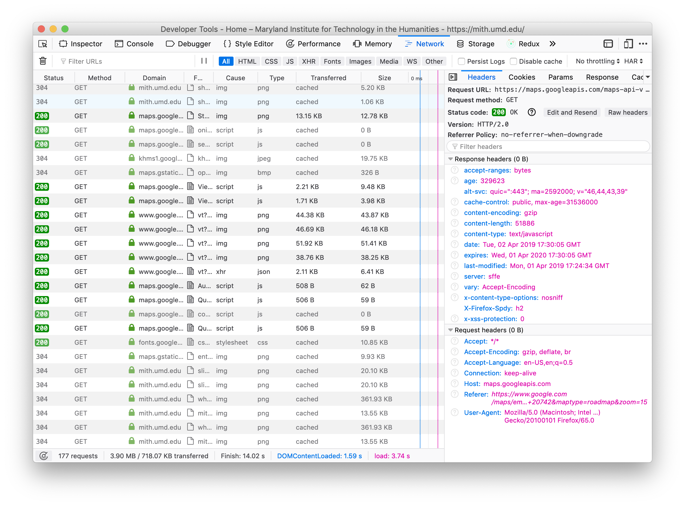

Web Data

There is no cloud. It’s just someone else’s computer.

The Web’s Primary Innovations
- HTTP: Hypertext Transfer Protocol
- URL: Uniform Resource Locator
- HTML: Hypertext Markup Language
- Open Standards: non-proprietary, IETF, W3C
- Browser: Lynx, Mosaic, Netscape, IE, Chrome, Firefox, Safari

Web APIs
Application Programming Interface

Remember how you can create, read, update and delete data in a database? Well you can do the same things with web APIs using HTTP methods:
- HTTP GET: read
- HTTP POST: create
- HTTP PUT: update
- HTTP DELETE: delete
We’re only going to be focused on GET.

pip3 install requests
Run the command above in your terminal to install the requests module.
pip is the python packaging utility for installing open source software distributed through the Python Package Index.
<Response [200]>
- create Python HTTP request object for a GET
- send HTTP request to webserver at umd.edu
- receive the response from umd.edu
- create and return a Python HTTP Response object
We can use the Response object to print out the text of the response that was sent back. In this case we see HTML.
Now lets GET JSON data for the current members of the House of Representatives using the ProPublica Congress API. Notice that we need a key? You can get your own if you want or you can use the one I’ve put on ELMS.
Let’s use Python’s json module that we’ve used in the past to pretty-print the data, so that it isn’t all on one line, and uses an indent of 2 spaces.
API Documentation
So how did I know about the special URL for the current members of the House? Most APIs come with documentation that explains how to use the API, which often includes the URLs you can use when talking to the APi, and what kinds of data you can expect to get back.
Let’s look a little more closely at the ProPublica API documentation.
Let’s use the Get Current Members by State/District and the Get Recent Bills by a Specific Member API calls together to print out the bills introduced by MD House members.
import json
import requests
def get(url):
headers = {"X-API-KEY": "INSERT_KEY_HERE"}
url = "https://api.propublica.org/congress/v1" + url
data = requests.get(url, headers=headers).json()
return data['results']
for member in get("/members/house/md/current.json"):
print(member['name'])
bill_data = get('/members/' + member['id'] + '/bills/introduced')
for bill in bill_data[0]['bills']:
print(bill['title'])
print(bill['congressdotgov_url'])
print('')import json
import requests
def get(url):
headers = {"X-API-KEY": "INSERT_YOUR_KEY"}
url = "https://api.propublica.org/congress/v1" + url
data = requests.get(url, headers=headers).json()
return data['results']
for member in get("/members/house/md/current.json"):
print(member['name'])
bill_data = get('/members/' + member['id'] + '/bills/introduced')
for bill in bill_data[0]['bills']:
if bill['congress'] == "116":
print(bill['title'])
print(bill['congressdotgov_url'])
print('')